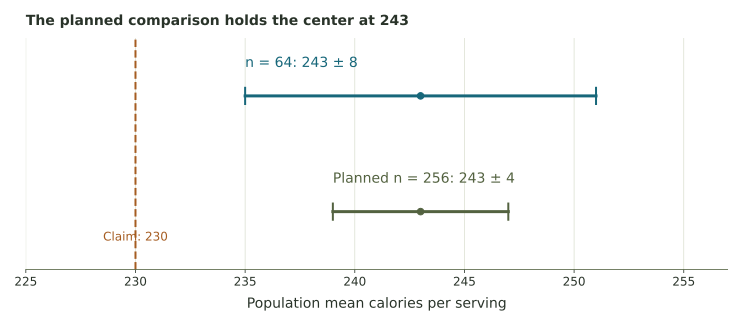

Checking a nutrition label
Use a sample mean and reported margin to compare a claimed population mean, then examine a larger-sample planning scenario.
The claim and the sample
A cereal label states that one serving contains an average of 230 calories. A consumer group randomly selects 64 boxes from the defined production population. The sample mean is 243 calories per serving, with a reported margin of ±8 calories.
| Quantity | What it describes |
|---|---|
| 230 calories | The label’s claim about the population mean |
| 64 boxes | The number of sampled units |
| 243 calories | The sample mean, an observed statistic |
| 8 calories | The reported margin around that estimate |
The population is all boxes produced under the process and time period of interest. Each measurement concerns the calorie content per serving. The calculation below uses the reported margin; its confidence level and method would need to be supplied in a full study report.
Interval arithmetic with different numbers
An estimate of 120 units with margin 6 gives [114, 126] units. A claimed population mean of 110 is outside, while 120 is inside. The interval concerns the mean, not the measurement of every unit.
Part 1. Construct the interval
Use sample estimate minus and plus its margin. Keep the endpoints in calories per serving.
Part 2. Make the statistical decision
Part 3. Sample size and precision
For comparable studies, margin is approximately proportional to 1/√n. Plan an increase from 64 boxes to 256. For this comparison, hold the estimated variability, confidence level, sampling design, and the center at 243 fixed. A new actual sample could change the center as well as the estimated margin.
Compare the intervals

Worked interpretation
The original reported interval is 243 ± 8 = [235, 251]. It excludes the claimed population mean 230. With four times the sample and the stated quantities held fixed, the planned margin is 4 and the planned interval [239, 247]. This also excludes 230. Neither calculation proves that every individual serving contains more than 230 or identifies a cause.
Use the interval and precision explorer to test the same arithmetic with other comparison values.